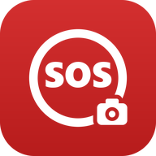

SnapSOS Privacy Policy
Last updated: 23 November 2026
SnapSOS is a group safety app: press SOS to alert your group, or send a photo or video report. This page explains what the app collects and why. We do not sell your data, we do not show ads and we do not track you across other apps or websites.
What we collect
- Device sign-in: SnapSOS signs you in anonymously with a random account linked to your device. No email or phone number is needed.
- Your name and photo that you type or choose in My profile, shown to members of your groups.
- Location: your location is sent to your group only when you send an SOS (shared live until you tap "I'm safe" or an admin marks it Handled) or attach it to a photo/video report. SnapSOS does not track your location at other times.
- Photos, videos and voice notes you choose to send to your group, with the details you type (place, unit, note).
- Group data: the groups you create or join, members, roles and the SOS log.
- Purchases: if a group owner buys Premium, the store's signed purchase record is checked by our server to unlock Premium. Payment details stay with Apple or Google; we never see them.
- Watch pairing: if you pair a watch, a pairing token so the watch can send SOS for you.
How it is used
Only to run the app: deliver SOS alerts, reports and messages to your group, show the SOS status and log, and keep Premium working. Microphone and camera are used only while you record a voice note, photo or video.
Where it is stored and for how long
Data is stored on our cloud database and storage (Supabase). Photos and videos are kept 7 days for free groups and 1 year for Premium groups, then hidden and removed. Leaving a group removes you from it; deleting a group removes it for everyone.
Who can see it
Only the members and admins of the groups you send to. We do not share your data with anyone else, except if required by law.
Deleting your data
Delete items in the app (What I sent > Delete) or leave/delete your groups. To delete everything linked to your device, email elevenelevensourcing@gmail.com with your name in the app and we will remove it within 30 days.
Children
SnapSOS is not directed at children under 13.
Important
SnapSOS helps your own group help you. It is not an emergency service and does not replace calling your local emergency number.
Contact
elevenelevensourcing@gmail.com
الخصوصية باختصار
لا نبيع بياناتك ولا نتتبعك. يُرسل موقعك إلى مجموعتك فقط عند إرسال نداء SOS أو تقرير. الصور والفيديو تُحفظ 7 أيام للمجموعات المجانية وسنة واحدة للبريميوم. لحذف بياناتك راسلنا على البريد أعلاه.
SnapSOS - Jassim Darwish, Doha, Qatar. Support · Privacy · Terms